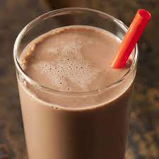

Chocolate Milk
Description
Chocolate milk is generally made by mixing cow's milk with cocoa and sweeteners like sugar or high-fructose corn syrup.
Ingredients
- Any type of milk (but preferably cow's milk.
- Any type of Cocoa Powder or diced chocolate.
Steps
- Pour the milk into a glass.
- Slowly add cocoa powder while blending with a spoon.
- If you want warm milk, put the glass in a microwave for roughly 1 minute.
- If you want cold milk, cover and place in the refrigerator until ready to drink.
- Serve and enjoy.